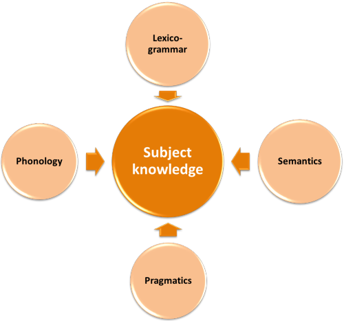
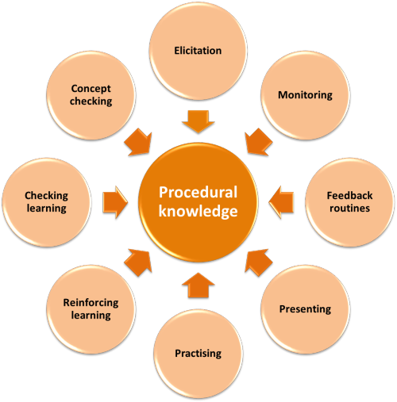
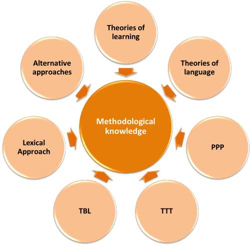
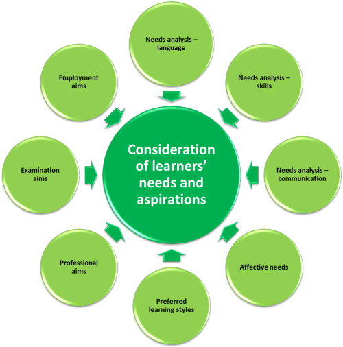
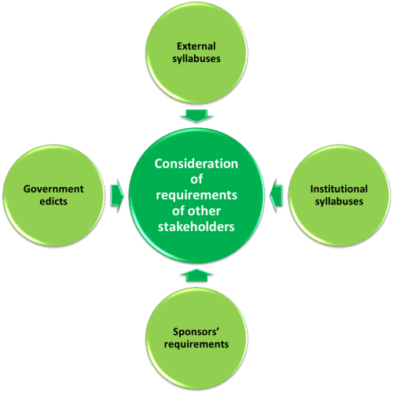
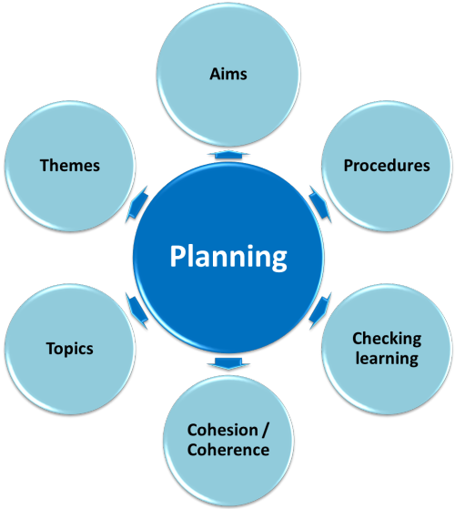
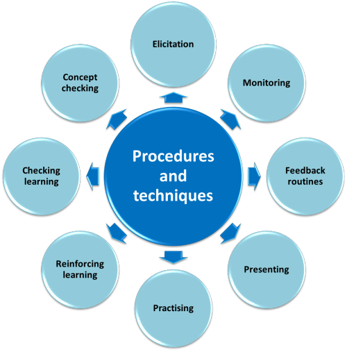
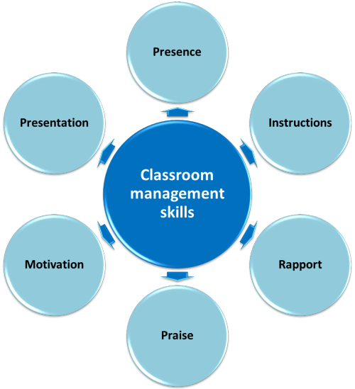
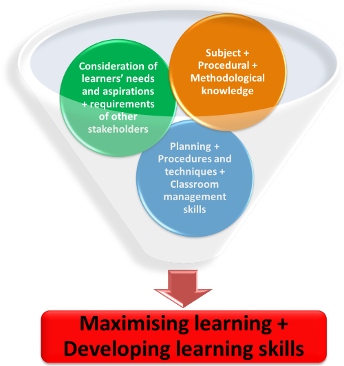

The expert teacher

Presumably, the aim of all personal development programmes,
teacher training courses and in-house improvement programmes is to
seek the grail of expertise. However, few of
these schemes define just what it is they are aiming to achieve.
To do that, we have to answer the question: "What makes an expert
teacher?" The following does not set out to provide a
definitive answer so if you have something to contribute to the
discussion, send it to the site. You know how.
(By the way, if you would prefer this as a PDF document, without any
of the interactive stuff,
click here.)
Here are some ideas.
Inputs and outputs
It is probably a simple truism that good teachers are open to ideas from outside their own experience and able to apply what they learn to the classroom. Defining what these external inputs are and how they result in output (i.e., application to the classroom) is less easy. Here, however, is a graphical representation of what is meant.

Notice first the directions of the arrows. On the right, we have inputs to the expert and on the left, outputs from the expert teacher. There is also some attempt at categorising what these are by colour coding.
Inputs: one by one
Subject knowledge
We can take each of the inputs and outputs in turn and think a
bit more about what they consist of. As a first task, take a
piece of paper and put a roundel in the middle entitled 'Subject
knowledge'. Now insert four roundels pointing to the central idea
and think what you understand by Subject knowledge in our context. Then click
 to compare.
to compare.

Expert teachers need a sound grasp of language. For that, they need to understand the grammatical, phonological and semantic systems of the language and the pragmatics of its use. Not everyone needs to be a master of all four but the knowledge to know where to look for theoretical insight is essential for all of us. Much of this site, especially in the training sections, is designed to contribute to this area.
Procedural knowledge
Procedural knowledge refers, simply put, to the knowledge of what
we actually do in the classroom. Try the same trick with a
roundel in the centre and a few more than three surrounding it.
In the first two of the outer circle put Monitoring and Elicitation
and then see what else you can think of to put in the others.
Then click
 to compare.
to compare.

If you follow the same procedure, you should be able to start with
something like The Lexical Approach or whatever. What else
falls under the category of Methodological knowledge?
Then click
 to compare..
to compare..

You may have included other pet approaches and methods here but the diagram above only contains the most obvious of these. The most important are a knowledge of theories of language and theories of learning. From these, all else flows. If we don't know the underlying theory of a technique or approach to teaching language, we are unlikely to be able to apply it consistently, flexibly and skilfully.
Consideration of learners' needs and aspirations
Following the same procedure, what do you believe we should be
considering about our learners in this respect?
Then click
 to compare.
to compare.

Depending on your context, you may have thought of other things you need to consider. Notice, however, that conducting a needs analysis is something we may well need to do first.
Consideration of the requirements of other stakeholders
Other stakeholders may include sponsors, parents and governments.
What else might you consider?
Then click
 to compare.
to compare.

These requirements are rarely considered overtly at the classroom level but, in many circumstances, they control the syllabus and the approach to teaching. Expert teachers won't ignore them.
Outputs: one by one
Planning
If you have followed the guide to planning on this site, you'll be
well equipped to know what should go into this section.
Then click
 to when you have a list.
to when you have a list.

Procedures and techniques
These will mirror the elements of procedural knowledge which was one
of the key inputs into developing expertise.
Click
 to reveal.
to reveal.

Here, we are less interested in knowing about these procedural issues but having the ability to use them, barely consciously, in the classroom. They go hand in hand with the planning, of course.
Classroom management skills
These, too, are the product of procedural knowledge and professional
practice. And again, many of these skills are applied in the
classroom almost unconsciously by expert teachers. Click
 for the elements of management which are
most important.
for the elements of management which are
most important.

Some of these management skills (such as presence and rapport) are hard to measure but easy to recognise.
Maximising learning and Developing learning skills
These are the outcomes of all of the above. Expert teachers combine all the inputs from training, research, discussions, workshops, conferences and reading and reflect on how they deploy the procedures and techniques which arise from the input. Here's the summary.

The remarkable thing about all this is that expert teachers manage to combine all of the above into a seamless display of expertise.
The whole of this page with its images is available here as a PDF document.